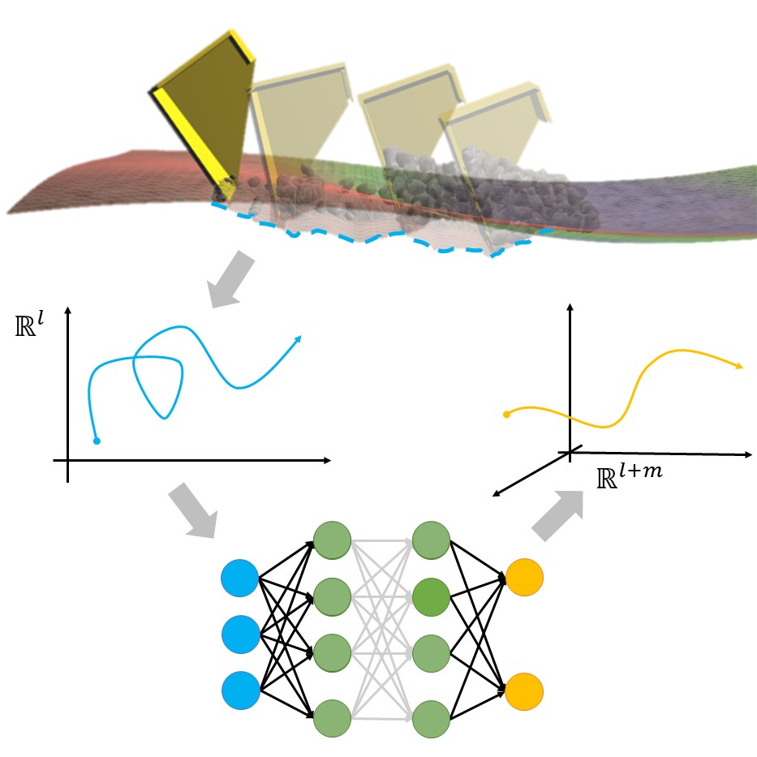
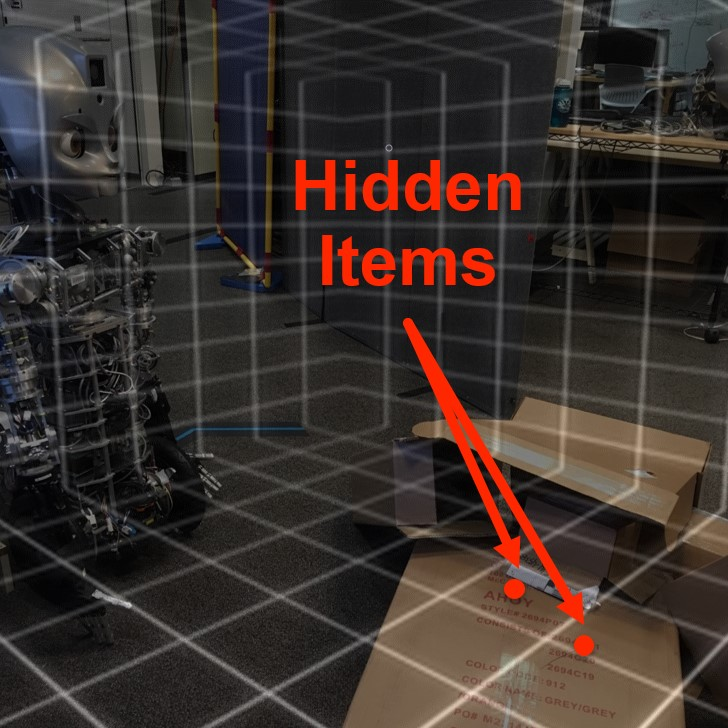
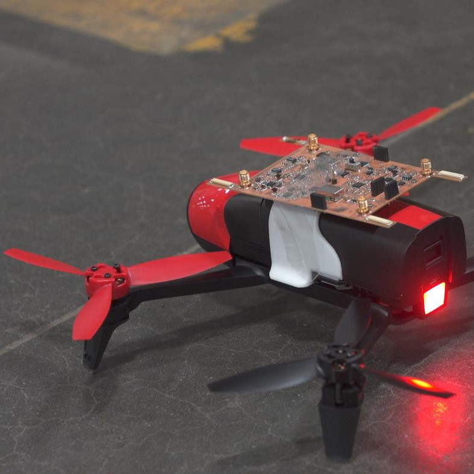
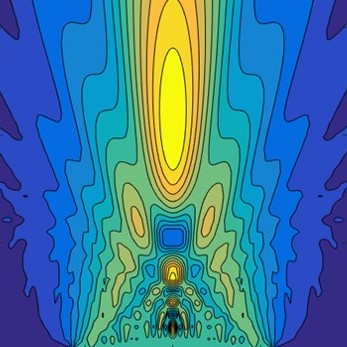
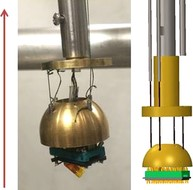
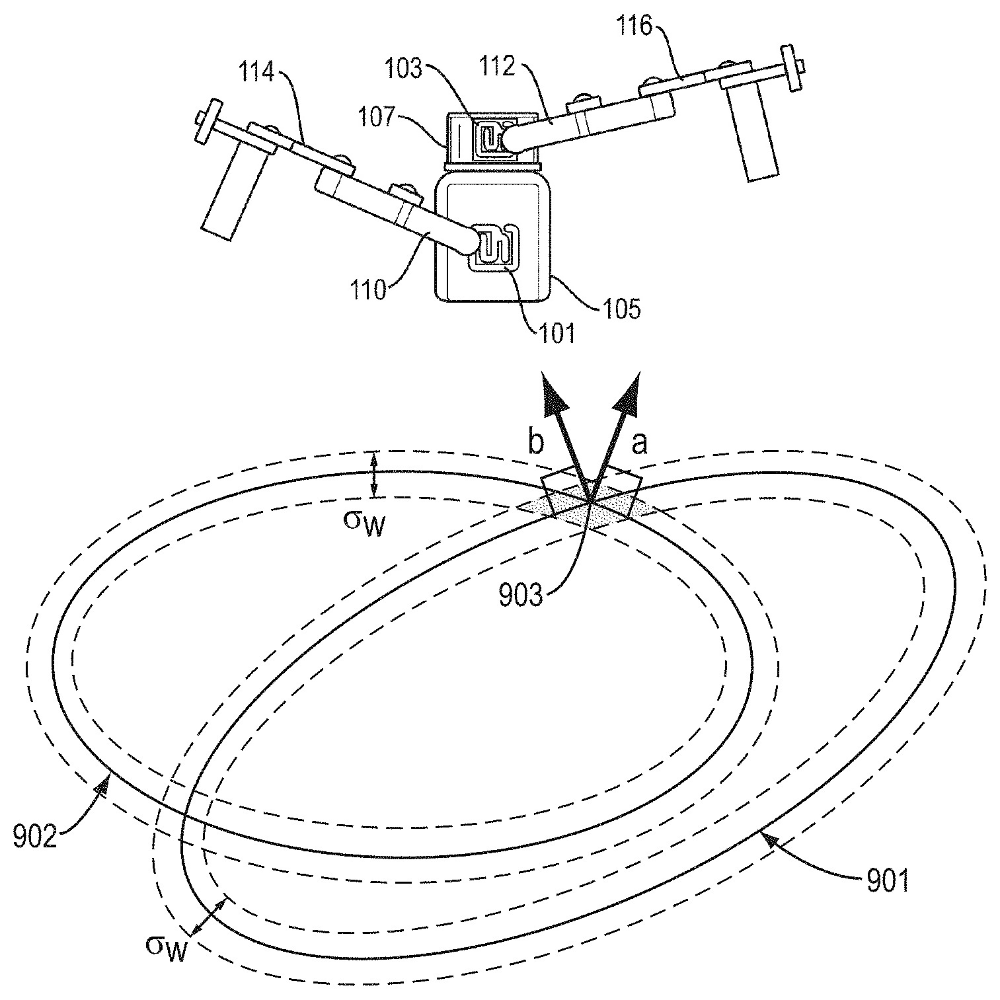
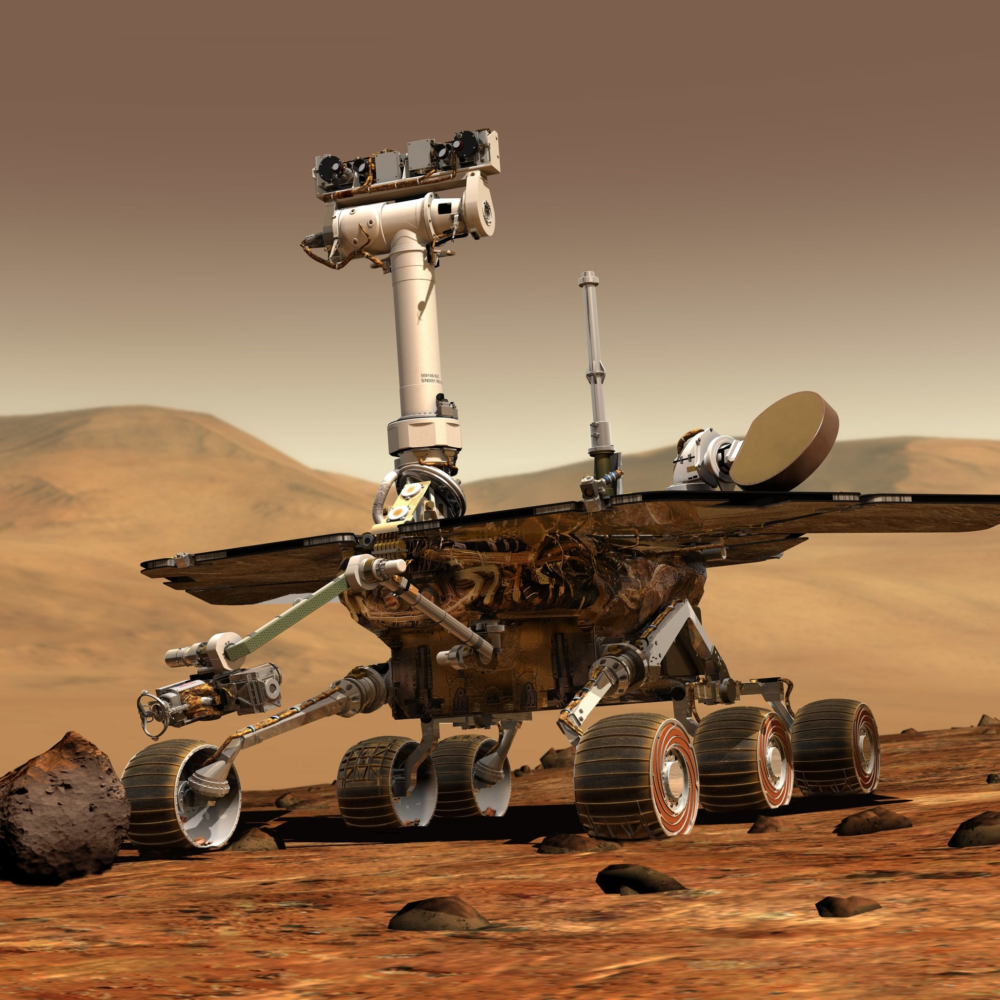
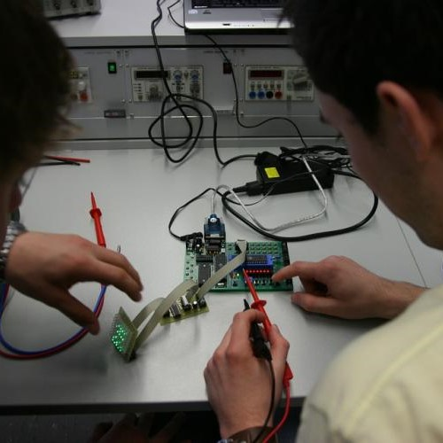
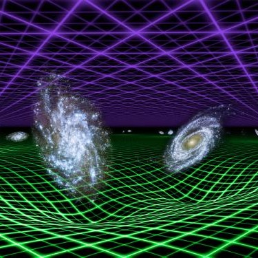

Director of Engineering at Renewvia
PhD in Electrical Engineering and Computer Science, MIT
Email: nicholas.selby@renewvia.com
I am the Director of Engineering at Renewvia Energy. I am responsible for the design, procurement, construction, productive use, and software infrastructure of solar minigrids in rural Kenya and Nigeria. I have a B.S. in Mechanical Engineering from the Georgia Institute of Technology, an M.S. in Mechanical Engineering from MIT, and a Ph.D. in Electrical Engineering and Computer Science from MIT. I have worked as a research engineer for NASA's Jet Propulsion Laboratory and Sandia National Laboratories.
Publications

Learning of Causal Observable Functions for Koopman-DFL Lifting Linearization of Nonlinear Controlled Systems and Its Application to Excavation Automation
Nicholas Selby and Harry Asada
IEEE Robotics and Automation Letters 6 (4), 6297–6304, 2021
BibTeX
Nicholas Selby and Harry Asada
IEEE Robotics and Automation Letters 6 (4), 6297–6304, 2021
BibTeX

TeachBot: Towards Teaching Robotics Fundamentals for Human-Robot Collaboration at Work
Nicholas Selby, Jerry Ng, Glenda S Stump, George Westerman, Claire Traweek, and Harry Asada
Heliyon 7 (7), e07583, 2021
BibTeX
Nicholas Selby, Jerry Ng, Glenda S Stump, George Westerman, Claire Traweek, and Harry Asada
Heliyon 7 (7), e07583, 2021
BibTeX

Minding the Billions: Ultra-wideband Localization in Deployed RFID Tags
Yunfei Ma, Nicholas Selby, and Fadel Adib
International Conference on Mobile Computing and Networking, Snowbird, UT, USA, 2017
BibTeX
Yunfei Ma, Nicholas Selby, and Fadel Adib
International Conference on Mobile Computing and Networking, Snowbird, UT, USA, 2017
BibTeX

Drone Relays for Battery-Free Networks
Yunfei Ma, Nicholas Selby, and Fadel Adib
ACM Conference on Applications, Technologies, Architectures, and Protocols for Computer Communication, Los Angeles, CA, USA, 2017
BibTeX
Yunfei Ma, Nicholas Selby, and Fadel Adib
ACM Conference on Applications, Technologies, Architectures, and Protocols for Computer Communication, Los Angeles, CA, USA, 2017
BibTeX

Determination of Absolute Material Nonlinearity with Air-Coupled Ultrasonic Receivers
David Torello, Nicholas Selby, Jin-Yeon Kim, Jianmin Qu, and Laurence J. Jacobs
Ultrasonics 81, 107–117, 2017
BibTeX
David Torello, Nicholas Selby, Jin-Yeon Kim, Jianmin Qu, and Laurence J. Jacobs
Ultrasonics 81, 107–117, 2017
BibTeX

In Situ Biaxial Rotation at Low-Temperatures in High Magnetic Fields
Nicholas Selby, Matthew Crawford, Lisa Tracy, John L. Reno, and Wei Pan
Review of Scientific Instruments 85 (9), 095116, 2014
BibTeX
Nicholas Selby, Matthew Crawford, Lisa Tracy, John L. Reno, and Wei Pan
Review of Scientific Instruments 85 (9), 095116, 2014
BibTeX
Patents

Methods and Apparatus for Wideband Localization
Zhihong Luo, Qiping Zhang, Nicholas Selby, Yunfei Ma, Manish Singh, and Fadel Adib
U.S. Patent Nos. 10,575,277, 10,921,419, and 10,701,662
Published 2020 and 2021
Zhihong Luo, Qiping Zhang, Nicholas Selby, Yunfei Ma, Manish Singh, and Fadel Adib
U.S. Patent Nos. 10,575,277, 10,921,419, and 10,701,662
Published 2020 and 2021

Full-Duplex, Bi-Directional, Analog Relay
Yunfei Ma, Nicholas Selby, and Fadel Adib
U.S. Patent No. 10,389,429
Published 2019
Yunfei Ma, Nicholas Selby, and Fadel Adib
U.S. Patent No. 10,389,429
Published 2019
Awards
- Forbes 30 Under 30 Class of 2023
- National Science Foundation Innovation Corps Teams Grant (2020)
- National Science Foundation Innovation Corps Fusion Grant (2019)
- First Place at the MIT Mechanical Engineering Research Exhibition (2019)
- Graduate Research Fellowship Honorable Mention from the National Science Foundation (2016)
- Richard K. Whitehead Jr. Memorial Award, awarded to the top three Mechanical Engineering seniors at the Georgia Institute of Technology (2016)
- Best Oral Presentation at the Georgia Tech Undergraduate Research Symposium (2016)
- President's Undergraduate Research Award from the Georgia Institute of Technology (2015)
- Air Products Undergraduate Research Award from Air Products and Chemicals, Inc. (2015)
- Best Utility Simulation for Product Design from the ASME 2014 International Design & Engineering Technical Conferences & Computers & Information in Engineering Conference (2014)
- Stamps Leadership Scholarship, a merit-based, full-ride scholarship awarded to the top 12 of 14,731 applicants, from the Stamps Family Charitable Foundation (2013)
Teaching

Identification, Estimation, and Learning
Massachusetts Institute of Technology, 2.160, Fall 2019
Key Concepts: machine learning, Kalman filters, system identification
Median Student Evaluation: 7/7
Massachusetts Institute of Technology, 2.160, Fall 2019
Key Concepts: machine learning, Kalman filters, system identification
Median Student Evaluation: 7/7

Analysis and Design of Feedback Control Systems
Massachusetts Institute of Technology, 2.140, Spring 2017
Key Concepts: time and frequency domain analysis, root locus and loop shaping, stability, nonlinearity, digital systems
Median Student Evaluation: 7/7
Massachusetts Institute of Technology, 2.140, Spring 2017
Key Concepts: time and frequency domain analysis, root locus and loop shaping, stability, nonlinearity, digital systems
Median Student Evaluation: 7/7
Computer Science for Engineers
Georgia Institute of Technology, CS 1371, Spring 2013–Spring 2016
Key Concepts: MATLAB, computing fundamentals, algorithms
Median Student Evaluation: 5/5
Georgia Institute of Technology, CS 1371, Spring 2013–Spring 2016
Key Concepts: MATLAB, computing fundamentals, algorithms
Median Student Evaluation: 5/5

Introductory Physics
Georgia Institute of Technology, PHYS 2211, Spring 2014
Key Concepts: calculus-based classical mechanics, oscillations, waves
Median Student Evaluation: 5/5
Georgia Institute of Technology, PHYS 2211, Spring 2014
Key Concepts: calculus-based classical mechanics, oscillations, waves
Median Student Evaluation: 5/5
Professional Service
Public Speaking:
- Panelist on "The East Africa Renewable Energy Mix: Critical Approaches towards a Just Transition" at the Africa ESG & Impact Investing Summit (2023)
- Panelist on "Solar and Green Energy as Ways of Harnessing Affordable Energy that is Environmentally Friendly" at the Intergovernmental Authority on Development's Kampala Declaration Forum (2022)
- Session Expert on "How Mini-grids are Electrifying the Region" at Eastern Africa Solar Week Conference (2022)
- Invited lecturer for the MIT Office of Engineering Outreach Programs' summer workshop, on "An Introduction to Machine Learning with PyTorch" (2021)
- Invited lecturer for "Summer Springboard," a high school summer program, on "Robotics 101" (2021)
- Host of "Science Day" for 600+ low-income K-5th graders at Conley Hills Elementary School (2015)
- Keynote speaker at FIRST Robotics international competition (2014)
- Keynote speaker at No Excuses University national convention (2014)
- Host of "Tech Talks," a science communication competition, at the Atlanta Science Festival (2014)
- Opening speaker for the Georgia Tech Freshman Convocation Ceremony [video] (2013)
- MIT Graduate Student Council (2020–2021)
- MIT Mechanical Engineering Diversity, Equity, and Inclusion Working Group (2020–2021)
- University System of Georgia China Outreach Program (2014)
- ACM Transactions on Sensor Networks
- IEEE International Conference on Intelligent Robots and Systems
- IEEE Internet of Things Journal
- IEEE Transactions on Intelligent Transportation Systems
- IEEE Transactions on Mobile Computing
- IFAC International Symposium on Advances in Automotive Control
- International Symposium on Mathematical Theory of Networks and Systems